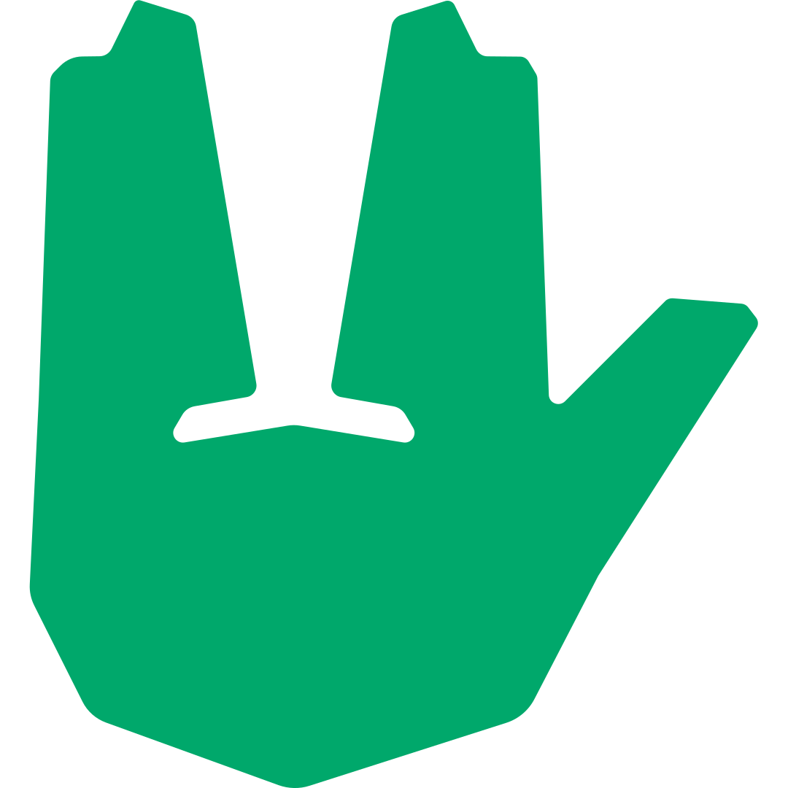
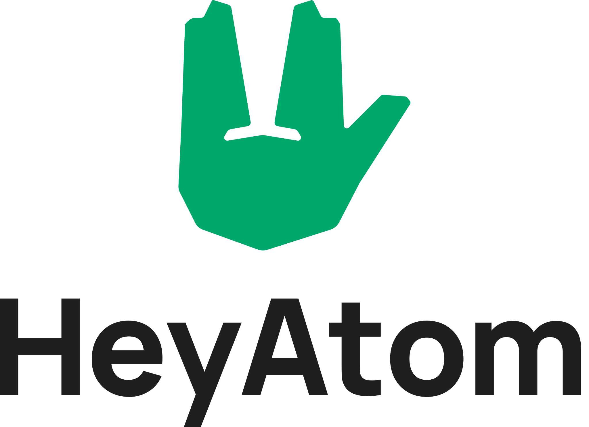

HeyAtomBrand guidelines · 2026
Brand
Code meets personality
Una mano che saluta, un verde, due font. Le regole con cui è fatto heyatom.dev e come usare il marchio altrove.
01 · Il segnoHeyAtom · Brand
Il segno.
Il saluto vulcaniano: un ciao, detto da nerd. La mano vive da sola o dentro il fumetto, un cerchio con un angolo al 10%, che è la forma dell'orb e della medaglia del sito.
Il segno regge da solo dove il logo non ci sta: favicon, avatar, header sotto i 480 px. È sempre in jade pieno.
Da solo
64 · 48 · 32 · 24 · 16 px
02 · Il logoHeyAtom · Brand

Orizzontale · default
Verticale · formati quadrati
Area di rispetto
X è metà dell'altezza delle maiuscole. Tra mano e scritta c'è X, attorno al logo almeno 2X.
Dimensioni minime
Logo 96 px di larghezza, segno 16 px. HeyAtom in Manrope ExtraBold, in tracciati.
03 · L'iconaHeyAtom · Brand
L'icona.
La mano da sola, senza riquadri né fumetti, su qualsiasi fondo. Jade di default; dove non regge, la variante chiara o scura dello stesso verde.
green-light · fondi scuri
green-dark · fondi chiari
04 · Edizioni specialiHeyAtom · Brand
Edizioni speciali.
Per qualche giorno la mano si veste per l'occasione. Cambia solo il segno, nel favicon, nell'header e nella home; scritta, verde e testi restano uguali. Si attivano da sole in base alla data.
Halloween
24 ottobre – 1 novembre
Natale
8 dicembre – 6 gennaio
05 · Il coloreHeyAtom · Brand
Il colore.
Un solo verde su neutri antracite. Il verde si comporta come luce: riempie poco e illumina il resto.
green#00A86B · bottone primario, piccoli segni
green-dark#007A4D
green-light#33BF89
Tema scuro · default
bgFondo pagina#1E201E
surfacePannelli#252725
surface-2Chip, tag#2E312F
inkTitoli#EEF1EF
ink-2Paragrafi#D1D5D2
ink-3Metadati#A1A6A2
green-lightLink, date, focus#33BF89
on-greenTesto su verde#04140D
Tema chiaro
bgFondo pagina#F3F5F3
surfacePannelli#FFFFFF
surface-2Chip, tag#EAEEEB
inkTitoli#151816
ink-2Paragrafi#3A403C
ink-3Metadati#5C635E
green-lightLink, date, focus#007A4D
on-greenTesto su verde#04140D
Il verde come luce
Pieno solo sul bottone primario e sui piccoli segni. Mai fondo di sezione.
Hairline verdi
Ogni separazione è una linea da 1 px nel verde al 16%.
Neutri neutri
Fondo e testi grigi senza tinta: il verde resta l'unico colore.
Due temi
Segue il sistema, scuro di default. Sul chiaro i testi verdi scendono a #007A4D.
06 · La tipografiaHeyAtom · Brand
La tipografia.
Manrope per tutto quello che si legge, JetBrains Mono solo per i dati.
Titolo stretto
Titoli da 700 a 800 con tracking negativo, più grande più stretto.
Mono per i dati
Anni, stack, conteggi. Mai titoli, kicker o frasi, mai maiuscolo spaziato.
Display800 · -0.04emCode meets personality
Headline700 · -0.03emCode meets personality
Title700 · -0.03emCode meets personality
Lead500 · 1.6Code meets personality
Body500 · 1rem · 1.6Code meets personality
Label600 · 0.94remCode meets personality
MonoJetBrains Mono 4002016 → 2026 · Nuxt · NestJS
07 · Forme, profondità, componentiHeyAtom · Brand
Forme e profondità.
Angoli stretti, ombre nere morbide, il verde solo come luce emessa.
10 px · cose che si cliccano, chip, immagini
Cerchi · solo punti e bottoni icona
Esagoni · solo texture, dal 7 al 18%
Ombra nera
Spread negativo, solo su ciò che si solleva.
Scrivimi
Alone verde
Solo CTA primario e punti luminosi. Il vetro esiste solo sull'header.
ScrivimiVedi i lavoriTutti i lavori →
NuxtNestJSPrisma2026 · Nuxt · NestJS
08 · Voce e cose da non fareHeyAtom · Brand
La voce.
Una persona, non un'azienda. Prima persona, tu al lettore, tono caldo e diretto.
Sì
Costruisco siti e web app su misura.No
Realizziamo soluzioni digitali innovative.
Sì
Raccontami il progetto.No
Contatta il nostro team.
Sì
Dal 2016, in ambito sanitario.No
Anni di esperienza al servizio del cliente.
Da non fare.
×Kicker in mono maiuscolo
×Pill da 999 px, raggi diversi da 10/14 px
×Nuove tinte o colori semantici
×Griglie di card per elenchi omogenei